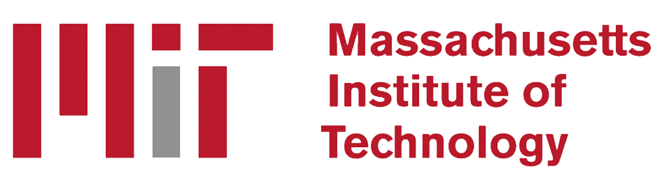

Computational Physics
Airflow around NACA 2412 airfoil
Physics-Informed Neural Networks for Aerodynamic Shape Optimization: A Machine Learning Approach to Accelerating Aircraft Design
PaperAbstract: Aerodynamic Shape optimization (ASO) is a computationally challenging but critical component of modern aircraft design, which involves modifying an airfoil to minimize the drag-to-lift ratio. Traditional methods for this problem utilize a simulation-based approach known as computational fluid dynamics (CFD) to solve the Reynolds-Averaged Navier-Stokes (RANS) equations and extract pressure values, which can be used to calculate lift and drag. These values are then iteratively updated to better suit turbulence conditions. The problem with this approach lies in the time complexity of iteratively computing solutions to the RANS equations required for ASO to converge. To exponentially speed up the process of ASO, we propose a novel algorithm that replaces a CFD solver with a physics-informed neural network (PINN), along with a comparison between two parameterization techniques to optimize an airfoil, both utilizing a PINN instead of a CFD solver. The model shows a speedup of 11,310.24% with the risk of only a 13% decrease in accuracy compared to a CFD solver.

EnviDrones
Founded research and development organization focused on developing high performance autonomous drones for environmental surveying. Created a statistical model that combines Convolutional Neural Networks with sensor data to detect tree patterns and deforestation. Built autonomous drones to test model across local parks for further testing. Presented concept and in-development product to faculty at UC Berkeley.
RoboDefect
Under the guidance of a Stanford professor, I constructed and ran a comparative analysis on machine learning models and methods for robotic arm failure detection. Through this research, I demonstrated the effectiveness of the Tuned Random Forest algorithm in comparison to various traditional techniques for predicting failure based on real-time data. Finally, I compiled the test results using the UC Irvine dataset and presented the overall analysis in a comprehensive research poster.
AttendFlow
Built and configured Ultra-High Frequency RFID scanning system to read student IDs remotely and store attendance records. Developed full-stack web application for school attendance based on the 5-Star App and an API to communicate with the card reader.Created features for event management, schedule adjustment, and student information handling. Presented project to school district and discussed methods to implement at a wide scale.
Longhorn Robotics
Used CAD software to design and prototype robot chassis, drivetrain, and intake system for my school's First Tech Challenge robotics team. Simulated and constructed parts for the robot and ran hundreds of tests to ensure accuracy and structural integrity of the system. Assisted in writing software for and testing micro-controller based embedded system onboard.